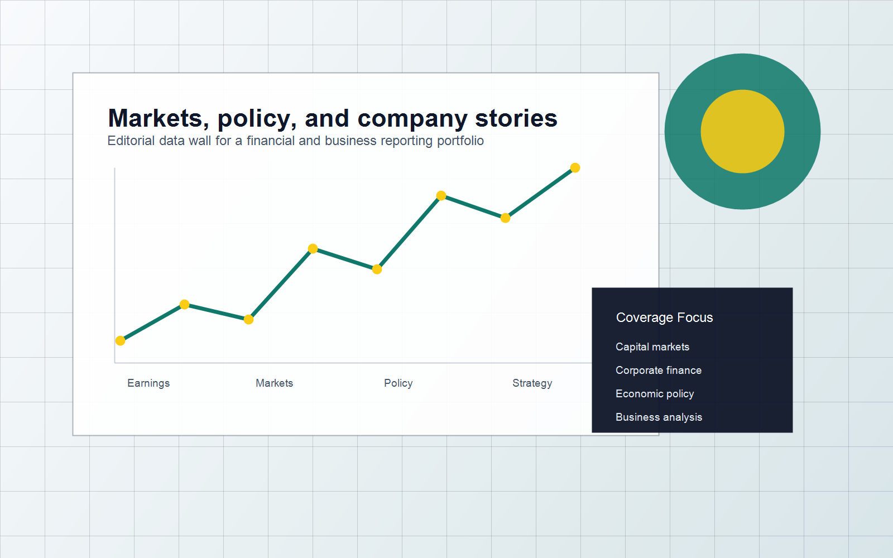

Capital Markets
Rates, equities, bonds, market structure, investor behavior, and the stories behind big moves.
Financial and business reporter
I turn balance sheets, policy shifts, executive decisions, and market signals into clear stories for readers who need context, speed, and judgment.

Selected work
Replace these sample clips with your published stories. Keep the mix broad enough to show range and focused enough to make your beat unmistakable.
Loading featured reporting...
Coverage areas
Rates, equities, bonds, market structure, investor behavior, and the stories behind big moves.
Earnings, dealmaking, funding decisions, restructuring, and the incentives shaping boardroom choices.
Central banks, fiscal plans, trade, inflation, jobs, and policy changes that affect businesses and readers.
Executive strategy, industry shifts, competition, governance, and the people steering major decisions.
About
I cover financial and business stories with a reader-first approach: explain the numbers, test the claims, find the human stakes, and make the implications clear without flattening the complexity.
My reporting combines source development, filings and data review, executive interviews, and close attention to how markets and policy decisions affect companies, workers, consumers, and investors.
Contact